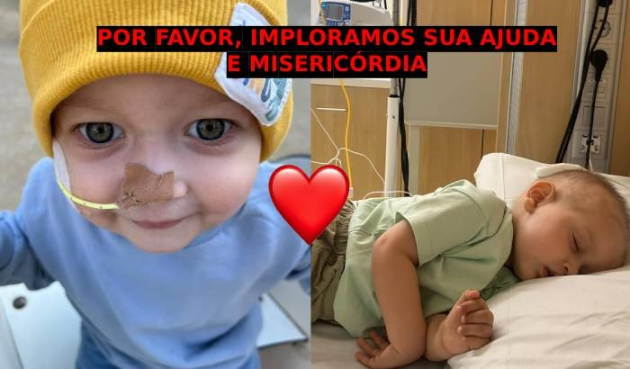

Marcelinho - Tumor Raro e Agressivo 🙏
 89 corações recebidos ❤️
89 corações recebidos ❤️
💔 A Mãe que Nunca Pensou em Esperar um Milagre
💔 "Mamãe… eu vou sarar? Eu quero brincar com meus carrinhos…" As palavras de Marcelinho, 2 anos, que luta contra um tumor raro e agressivo
Eu nunca pensei que minha vida se resumiria a esperar um milagre dentro de um hospital. O Marcelinho tem só 2 aninhos e já conhece mais sobre dor do que qualquer adulto. Ele nasceu saudável, um bebê sorridente, cheio de energia, mas tudo mudou de repente. Começou com uma febre que não passava, depois uma manchinha no rosto, o corpinho mole. A gente levou ele no posto de saúde e disseram que era virose, mandaram de volta pra casa com dipirona. Mas no dia seguinte, o rostinho dele estava inchado, e ele chorava sem parar, pedindo pra gente segurar ele no colo porque não conseguia mais andar.
🏥 O Diagnóstico que Mudou Tudo
✔ Tumor raro e extremamente agressivo ✔ Pode se espalhar para cérebro e pulmões ✔ Tempo limite: até agosto para começar tratamento ✔ Só pode ser tratado fora do Brasil
Nossa Vida Virou de Cabeça pra Baixo
👨👩👦 Nos dias seguintes, nossa vida virou de cabeça pra baixo. O pai do Marcelinho, que trabalha como ajudante de pedreiro, passou a dormir no hospital comigo porque eu não conseguiaficar sozinha.
Eu precisei largar o pouco trabalho de faxina que fazia pra não deixar nosso filho sozinho. As contas começaram a acumular. A luz foi cortada em casa, vendemos nossa geladeira e nosso fogão pra comprar parte dos remédios que o hospital não fornecia.
💰 O Tratamento que Pode Salvar
URGENTE: PRECISAMOS DE R$ 480.000.
Os médicos falaram que o único tratamento capaz de salvar ele é um protocolo especial feito fora do Brasil. É um medicamento caríssimo, com quimioterapia de última geração e cirurgia para remoção do tumor. O custo? Quase meio milhão de reais. Eles disseram que, se o Marcelinho não começar o tratamento até agosto, o tumor pode se espalhar pro cérebro e pros pulmões. Eu tenho até medo de pensar no que vai acontecer se eu não conseguir o dinheiro.
✔ JÁ CONSEGUIMOS: R$ 35.000
❌ FALTAM: R$ 445.000
😭 Nossa Realidade de Pobreza
E como é que eu vou conseguir esse valor? A gente já vendeu tudo. Já pedimos ajuda pra amigos, vizinhos, até fizemos uma rifa, mas a realidade é que somos pobres. Moramos numa casa simples, com goteira no teto, colchão no chão. Esses dias, o pai do Marcelinho chegou em casa chorando porque perdeu o trabalho. O patrão disse que precisava de alguém que não faltasse, e ele faltou porque passou a semana no hospital com a gente. Agora ele faz bicos carregando entulho, mas nem isso tá dando.
🙏 A Fé que Não Deixamos Morrer
Ainda assim, a gente não perdeu a fé. Eu passo as noites ajoelhada no chão frio do hospital, com a Bíblia na mão, pedindo pra Deus não levar o meu bebê. Semana passada, uma senhora que nem conheço me parou no corredor do hospital, olhou bem nos meus olhos e disse: "Não desista… eu sonhei com um menino de olhos grandes sendo salvo por um anjo." Eu tenho certeza que era Deus falando comigo. E eu acredito que esse anjo pode ser você.
"Não desista… eu sonhei com um menino de olhos grandes sendo salvo por um anjo."
A profecia de uma desconhecida que mudou nossa esperança
💔 "NÃO DEIXA MEU FILHO PARTIR POR FALTA DE DINHEIRO"
Por favor, abre seu coração e ajuda.
Eu imploro, de mãe pra mãe, de mãe pra pai, de coração pra coração.
Faz sua doação agora e seja o milagre que tanto pedimos.
⏰ Prazo: 28 de julho (faltam poucos dias!)
Agora é com você.
É você quem decide se Marcelo vai crescer escondendo o rostinho atrás de uma mãozinha… ou se ela vai ter a chance de sorrir, falar e viver como qualquer outra criança.
📖 "Levem as cargas uns dos outros, e, assim, cumpram a lei de Cristo." (Gálatas 6:2)
CADA DIA QUE PASSA, Marcelo FICA MAIS TEMPO SEM PODER SORRIR!Esses custos são altos e, mesmo com todo o amor do mundo, a família precisa de ajuda urgente para garantir a Marcelinho uma vida com mais dignidade, conforto e qualidade de vida.
🙌 Marcelo não precisa de piedade. Ela precisa de um milagre.
E talvez o milagre seja você.
🙏 UM SINAL DE ESPERANÇA
Naquela noite, ajoelhada no chão frio, ela pediu um sinal a Deus. Fechou os olhos e viu Marcelo correndo, com os lábios perfeitos, sorrindo sem medo, segurando a mão de uma senhora vestida de branco.
💌 Testemunhos de Quem Conhece Marcelinho
"Marcelinho é a crainça mais forte que eu conheço. Ela me inspira todos os dias a valorizar a vida. Sei que, com um pouco de ajuda, ela pode continuar sendo esse exemplo pra muita gente."
— Lucas, amigo da familia
📢 Um Chamado ao Coração de Quem Se Importa
Marcelinho já deu tudo de si à vida. Agora, é hora de a vida dar algo de volta.
ela merece viver com conforto, com dignidade, com cuidado.
Se você já perdeu alguém que amava, sabe como é sentir que poderia ter feito mais.
Não deixe esse sentimento chegar até você.
Agora é a hora. Hoje é o dia. Você pode ser a diferença.
Você receberá:
● Atualizações semanais da nossa jornada
● Vídeo do novo lar sendo construído
● Seu nome na nossa lista de anjos (se desejar)
Compartilhe nossa história. Cada compartilhamento é uma nova chance de devolver dignidade à minha família.
Que Deus abençoe você e a sua família.